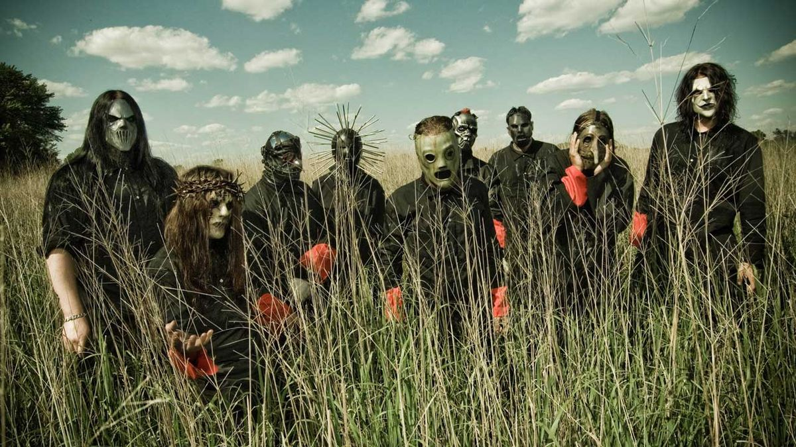

All Hope Is Gone Tab

Tuning: B
Capo: No capo
[Intro Riff 1] C#|---------------------------------------------| G#|---------------------------------------------| E |---------------------------------------------| B |---------------------------------------------| F#|-----------------0------------------0--------| B |-6p3h6p3-7p4h7p4-0--6p3h6p3-7p4h7p4-0--------| C#|-----------------------------------------------------| G#|-----------------------------------------------------| E |-----------------------------------------------------| B |-----------------------------------------------------| F#|------------------0--8p5h8p5-------9p6h9p6-10p7h10p7-| B |--6p3h6p3-7p4h7p4-0---------8p5h8p5------------------| Play all above twice! [Intro Riff 2] C#|---------------------------------| G#|---------------------------------| E |---------------------------------| x8 B |---------------------------------| F#|-0-0-6-0-0-5-0-0-6-0-0-5-0-3-0-0-| B |-0-0-6-0-0-5-0-0-6-0-0-5-0-3-0-0-| pm . . . . . . . . . . [Bit Before Verse] C#|--------------------------------| G#|--------------------------------| E |--------------------------------| B |-3~~~~~~~~~~~~~~~~~~~~~~~~~~~~--| F#|-0~~~~~~~~~~~~~~~~~~~~~~~~~~~~--| B |-0~~~~~~~~~~~~~~~~~~~~~~~~~~~~--| [Verse Riff 1] | after the first four times, play: C#|----------------------------------|---------------------| G#|----------------------------------|---------------------| E |----------------------------------|x8-------------------| B |----------------------------------|---------------------| F#|---------9999999988888888---------|--------------12\\-6-| B |-66666666----------------99999999-|--------------12\\-6-| C#|--------------------------------| G#|--------------------------------| E |--------------------------------| B |--------------------------------| F#|-0~~~~~~~~~~~~~~~~~~~~~~~~~~~~--| B |-0~~~~~~~~~~~~~~~~~~~~~~~~~~~~--| [Verse Riff 2] C#|-------------------------------------------------------------------| G#|-------------------------------------------------------------------| E |-------------------------------------------------------------------| B |-------------------------------------------------------------------| F#|--------777777888888------------------555555777777888888-----------| B |777777----------------1010101010101010--------------------66666666-| [Chorus] (please listen to the song for the correct rhythm) C#|-----------------------------------------------------------| G#|-----------------------------------------------------------| E |-----------------------------------------------------------| B |-00000000-888888-77-88-13131313131313-13-11111111-10101010-| F#|-00000000-555555-77-88-13131313131313-13-13131313-12121212-| B |-00000000-555555-77-88-13131313131313-13-------------------| C#|---------------------------------------------------------| G#|---------------------------------------------------------| E |---------------------------------------------------------| B |-00000000-888888-77-88-3--3-3-3-3-3-3/6-1--1-1-1-1-1-1-1-| F#|-00000000-555555-77-88-3--3-3-3-3-3-3/6-1--1-1-1-1-1-1-1-| B |-00000000-555555-77-88-3--3-3-3-3-3-3/6-1--1-1-1-1-1-1-1-| pm . . . . . . . . . . . . C#|--------------------------------| G#|--------------------------------| E |--------------------------------| B |--------------------------------| F#|-0~~~~~~~~~~~~~~~~~~~~~~~~~~~~--| B |-0~~~~~~~~~~~~~~~~~~~~~~~~~~~~--| [Solo Breakdown] (sorry, can't work out the solo) C#|-------------------------------------------------| G#|-------------------------------------------------| E |-------------------------------------------------| x2 B |-------------------------------------------------| F#|-------------------------------------------------| B |-0-3-6-0-3-5-0-3-6-0-0-5-0-3-0-0-----------------| C#|-------------------------------------------------| G#|-------------------------------------------------| E |-------------------------------------------------| x8 B |-------------------------------------------------| F#|-------------------------------------------------| B |-0-3-6-0-3-5-0-3-6-0-0-5-0-3-0-0-----------------| pm . . . . . . . . . . . . . . . . [Chorus] [Breakdown] C#|-------------------------------------------------| G#|-------------------------------------------------| E |-------------------------------------------------| B |------------------------------------//7\\//8\\---| F#|-8--7--5-7-3-2~-1----8-7-5-7-3-2~-1--------------| B |-8--7--5-7-3-2~-1----8-7-5-7-3-2~-1--------------| pm . . . . . . . . . . C#|-----------------------------------------------| G#|-----------------------------------------------| E |-----------------------------------------------| x2 B |------------------------------------//7\\//8\\-| F#|-8-7-5-7-3-2~-1----8-7-5-7-3-2~-1--------------| B |-8-7-5-7-3-2~-1----8-7-5-7-3-2~-1--------------| pm . . . . . . . . . . C#|-----------------------------------------------| G#|-----------------------------------------------| E |-----------------------------------------------| B |-----------------------------------------------| F#|-8-7-5-7-3-2~-1----8-7-5-7-3-2~-1--1--1--------| B |-8-7-5-7-3-2~-1----8-7-5-7-3-2~-1--1--1--------| pm . . . . . . . . . . . . C#|-----------------------------------------------------| G#|-----------------------------------------------------| E |-----------------------------------------------------| B |----------------------------------------//7\\//8\\---| F#|-8--7--5-7-3-2~-1-1-1-1--8-7-5-7-3-2~-1--------------| B |-8--7--5-7-3-2~-1-1-1-1--8-7-5-7-3-2~-1--------------| pm . . . . . . . . . . . . . C#|----------------------------------------------------| G#|----------------------------------------------------| E |----------------------------------------------------| x2 B |-----------------------------------------//7\\//8\\-| F#|-8-7-5-7-3-2~-1--1-1-1--8-7-5-7-3-2~-1--------------| B |-8-7-5-7-3-2~-1--1-1-1--8-7-5-7-3-2~-1--------------| pm . . . . . . . . . . . . . C#|----------------------------------------------------| G#|----------------------------------------------------| E |----------------------------------------------------| B |----------------------------------------------------| F#|-8-7-5-7-3-2~-1--1-1-1--8-7-5-7-3-2~-1--1--1--------| B |-8-7-5-7-3-2~-1--1-1-1--8-7-5-7-3-2~-1--1--1--------| pm . . . . . . . . . . . . . . . [Verse Riff 2 x2] [Verse Riff 3] C#|------------------------------------------------------------------| G#|------------------------------------------------------------------| E |------------------------------------------------------------------| x2 B |---------7777777788888888--------555555557777777788888888---------| F#|-55555555----------------88888888------------------------44444444-| B |------------------------------------------------------------------| [Chorus x2] [Breakdown] ************************************ | h Hammer-on | p Pull-off | . Staccato | ~ Vibrato | \ Slide down | / Slide up ************************************